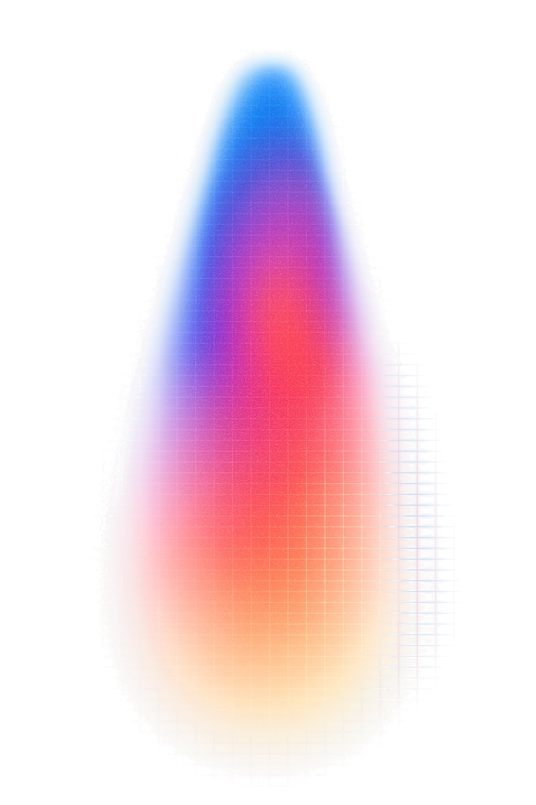

Context engineering en testsets
Werkt het, en hoe weet ik dat?
Om 13:30 heb je
Klaar om te starten?
slides, uitleg, demowww.advancedai.wiki
Niet Fable of Astra!
Open je AI in je eigen map. Typ:

Om 10:55 heeft iedereen een taak.
Alles vandaag draait op je eigen taak.
Waar sta jij?
Codex:
$brainstorm wat ik bouw voor de cursusOm 10:55 ligt je taak vast. Geen taak? De mailsorteerder uit de starterset.
Je vijf nieuwe inputs zijn de lastige.
10 op 10? Dan is je testset te makkelijk.
Vast? Haal de hulp in je context.
Je AI kijkt wat er al in build/ staat, zegt waar je zit, en helpt met de volgende stap.
Jij kiest wat je AI leest. Ook dat is context engineering.
Wat weet het? Wat ziet het?
Jouw regels zitten in jouw hoofd. Tot je ze opschrijft.
Een model leest tokens.
Stukjes tekst. Geen letters, geen woorden.
Nederlands: 1 woord ≈ 1,5 token.
Het contextvenster
Daarom straks: één nieuw gesprek per input.
Eén gesprek, één limiet.
200.000 tokensHarry Potter 1 past.
Harry Potter 5 niet.
1.000.000 tokensVier boeken passen.
De hele reeks niet.
1.050.000 tokensOngeveer hetzelfde.
Een mail voor Sara.
Sorteer: doen, lezen of negeren.
Wat kies jij?
Het model kent Sara niet.
Er staat een deadline in, dus het kiest doen of lezen.
Wat weet het model niet?
4 van de 5 keer. Eén keer: lezen.
Zelfde mail. Nu met Sara's regels.
En nu?

Het model werd niet slimmer.
Het kreeg Sara's regels. Antwoord: negeren, 5 op 5.
Kiezen wat het ziet, heet context engineering.
“The art of providing all the context for the task to be plausibly solvable by the LLM.”
Geef je model alles wat het nodig heeft om de taak op te lossen. — Tobi Lütke, CEO Shopify, 2025
Te weinig is fout. Te veel ook.
Doel: alles wat nodig is. Niets meer.
context.md = context engineering voor je agent.
Vandaag doe je het voor je tool.
Zes bouwstenen van een goede context
Hoe dringend?
Een bericht van een chauffeur. De planner moet kiezen.
Wat kies jij?
Twee modellen, twee antwoorden.
Het model gokt jouw regels.
Schrijf je regels op.
Ook de regels die voor jou vanzelf spreken.
5 op 5, op elk model.
Toon wat je bedoelt.
Het label bleef dringend.
Voorbeelden tonen waar de grens ligt, en welke vorm je wil.
Welke truck? Wat is er mis?
5 op 5. Even zeker als bij een duidelijk bericht.
Met uitweg:
5 op 5. Dan belt de planner de chauffeur.
Een regel met een waarom.
Wat is veiligheid? Het model gokt.
En ‘de truck verliest lucht’?
Met het waarom vangt je model ook de gevallen die jij niet bedacht.
Jij schrijft de context.
build/log.md en build/README.md
Pauze
Na de pauze: tien inputs. Dan speelt je buur het model.
Tien inputs.
De fouten zijn wat je inlevert.
“Show your prompt to a colleague with minimal context on the task and ask them to follow it. If they'd be confused, Claude will be too.”
Is je collega in de war, dan je model ook.
Je buur speelt het model.
Zei je iets dat niet in je prompt staat? Dan ontbreekt het.
Kan een mens het niet uit je prompt halen, dan je model ook niet.
Vijf inputs, elk één keer.
Fouten hebben een naam.
F2 en F6 zijn de gevaarlijke.
60% met elke fout benoemd > 95% zonder testset.
Wis nooit een fout.
Verander één ding.
log.md: wat je deed, wat er gebeurde3 → 1 is een mooi verhaal. Nog geen bewijs.
Tegen dinsdag 13 oktober, 23:59
Thuis: je andere vijf inputs, dan alle tien een tweede keer. Volgende week is checkpoint 1.